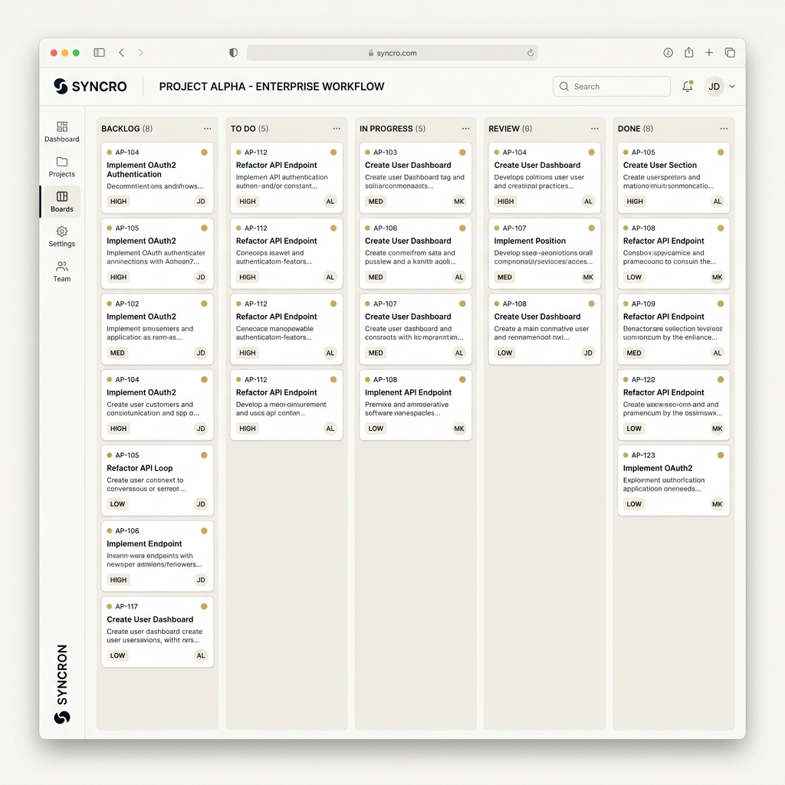

Act I — A Scene (120 words)
A founder sat in the weekly all-hands meeting, watching the spreadsheet project on screen. Every row held a decision: which sales leads to chase, which projects to green-light, who deserved a promotion. In traditional orgs, a CEO makes these calls. Here, 35 people sat in silence, studying the same data. No vote. No approval chains. Just: look at the numbers, see what you see, decide for yourself. The founder realized the moment the first hands went up — not to vote, but to ask clarifying questions. This was different.
Act II — The World
The organization had made a radical choice: no managers. No org chart. No approval hierarchy. Everyone remote. Everyone could see every salary, every budget, every deal. In hierarchical companies, information is power — a manager holds data, makes a decision, communicates down. Here, the information was public and the decisions were distributed.
This worked at 10 people. It broke at 35. Who decided which deals to pursue when sales reps disagreed on priorities? Who approved headcount when everyone competed for limited budget? Who resolved conflicts when there was no hierarchy to escalate to? How do you operate a company without the coordination mechanism that hierarchy provides?
The company had the conviction but not the infrastructure. They needed a tool that could make radical transparency work at scale.
Metadata: Lead product designer. Owned information architecture across 8 interconnected modules. 2020–2024. Live product, no NDA constraints.
Act III — The Encounter (150 words + pull quote)
I spent a week shadowing the team. Sales reps were frustrated — they couldn't see what the company valued most. Finance couldn't enforce budget discipline without authority. People wanted to grow but had no clear leveling framework. The problem wasn't lack of data. It was that data alone doesn't coordinate people.
The insight came mid-conversation with the founder: "We don't need a hierarchy in software. We need to make transparency the mechanism that does what hierarchy used to do."
Radical transparency doesn't replace managers because it removes the need for them. It replaces them because people self-organize when they see the truth.
Act IV — The Work (350 words)
I inverted how the product thought about coordination. Most enterprise software asks "What can you do?" — it designs workflows first. OrgOS asked "What can you see?" — it designed for visibility first, and workflows emerged from shared understanding.
Sales module: Every deal visible. Reps saw pipeline, conversion rates, deal margins, customer health in real time. Not assigned by managers. Instead, the system showed: "Enterprise deals close 35% faster and carry 2.1× margin. Mid-market deals are more predictable. Early-stage has the highest churn." Reps allocated hours against visible incentives, not instructions.
Finance module: All salaries visible. All budgets visible. All spending transparent. No CFO approval gates. Instead, peer accountability: if you're under-spending while others are constrained, someone asks why. If you're overpaying for a role, salary data makes it obvious. Friction becomes visible and addressable.
People module: No managers write performance reviews. Instead, leveling frameworks are public. Peer feedback is collected. Compensation bands are transparent. An engineer who says "I'm ready to move to Level 3" sees exactly what L3 work looks like, what peers think about their readiness, and what bands apply. Growth is peer-validated, not managerially gatekept.
Projects module: Work doesn't flow down from authority. Projects show impact, resource needs, and dependencies. Teams bid for them. Resources compete through transparent trade-offs, not hidden budget approval.
Act V — The Turn (150 words)
The platform shipped. Over 18 months, the company grew from 35 to 120 people without hiring a single manager. Decision latency dropped — no approval chains, no waiting for bandwidth. Turnover dropped because transparency builds trust. Revenue per employee increased 60% because self-directed work aligns with business impact. Salary compression decreased because visibility removed hidden resentment.
The most unexpected outcome: radical pay transparency reduced dissatisfaction. People could see what roles earned, why, and where they stood. The silence that usually breeds resentment was replaced with clear norms. Friction was visible and addressable. (120 employees managing themselves · 35% faster decisions · 60% revenue per employee lift · 18 months post-launch)

Act VI — The Implication (120 words)
This project taught me that coordination is a design problem. Hierarchies work because they make decisions visible and traceable. But hierarchies also concentrate power and slow decisions. The alternative isn't anarchy — it's transparency as structure. When everyone sees the same data, they self-organize toward aligned outcomes. This is deeper than flat orgs or remote work or any specific operational structure. It's a principle: visibility replaces authority as the coordination mechanism.
I've carried this forward. Every intelligent system I design now starts with the same question: What can we make visible so people can decide for themselves?
Design Patterns Demonstrated
This project is a study in designing for human-in-the-loop decision-making at organizational scale. Every module required peer review, feedback loops, and collective judgment:
- Human-in-Loop Patterns: Salary setting (propose → peer feedback → approve), project prioritization (bid → justify → decide), growth leveling (propose → peers validate). Every core system needed a transparent alternative to manager decision-making.